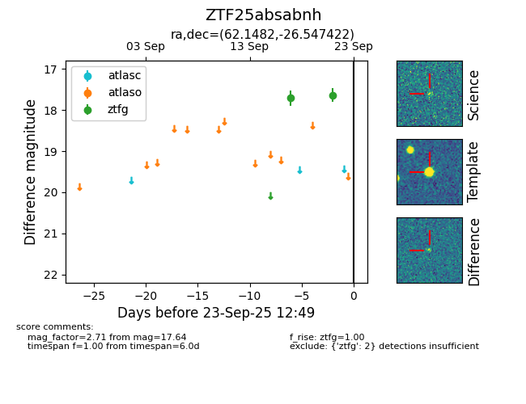

FINK: ZTF25absabnh
Lasair: ZTF25absabnh
ALeRCE: ZTF25absabnh
ZTF25absabnh (ztf,fink)
equatorial (ra, dec) = (62.1482,-26.54742)
galactic (l, b) = (223.9244,-46.30976)

last ztfg=17.64
2 ztfg detections